2 羟基磷灰石钙：创新型CaHA混合物
羟基磷灰石钙（CaHA）创新混合物
ALEC D. MCARTHY, VIVIANA PERICO, SHINO BAY AGUILERA, ALESSANDRO GENNAI, FABRIZIO MELFA, JONATHAN KADOUCH, NABIL FAKIH-GOMEZ, AND JANI VAN LOGHEM
2.1 背景
在美容医学中，将 CaHA 与其他先进方法进行创新混合，代表了一种解决面部衰老问题的专业和前沿策略。由于这些综合治疗能够同时解决衰老的各个方面，因此能产生更全面、更优化的效果。然而，有效且安全地执行这些混合疗法需要深入了解其个体和集合效应，突显了该领域的专业知识的重要性。在本章中，我们将探讨三种利用 CaHA 的创新混合方法及其各自的治疗方案。
2.2 CaHA：NCTF
将 CaHA 与新型细胞治疗因子（NCTF）——一种由透明质酸、维生素和其他微量营养素组成的制剂——相结合，利用了 NCTF 的微量营养素益处。由于患者体内微量营养素缺乏会影响治疗效果，向具有再生特性的 CaHA 中补充氨基酸和辅酶，为有效的蛋白质合成奠定了营养基础。研究表明，这种混合方法在单次治疗后可显著改善所有患者的皮肤松弛度、皱纹严重程度、光泽度和色素沉着 [1]。
2.2.1 分步技术
- 取等体积（1.5 mL）的 Radiesse(+) 和 NCTF 135HA，在面部区域实现 1:1 的稀释。
对于颈部和胸部区域的应用，建议使用 1:4 的高倍稀释混合物，以避免结节形成风险。
-
将每种组分分别转移到 5 mL 注射器中。
-
通过母口连接注射器，确保接头牢固，防止泄漏或污染。
-
在注射器之间来回推移悬液至少 20 次，以确保两种组分充分混合和均质化。
-
将 2.5% 利多卡因与 2.5% 普利洛卡因混合制成麻醉霜，并在治疗前 30 分钟将薄而均匀的层涂抹于中下部面部区域。
-
选择钝性套管针（cannula）25G，50 mm 用于操作。
-
对注射部位采用三点入路：
i. 第一个注射点应位于颧韧带前侧 1 cm 处。
ii. 第二个注射点放置于口角外侧 1.5–2 cm 处。
iii. 第三个注射点定位于颏角前侧 1.0–1.5 cm 处。
-
在这些点进行 1% 利多卡因与肾上腺素溶液（1:200000）的渗透麻醉。
-
使用逆行扇形技术（retrograde fanning technique）给药，从内侧向外侧移动，并在每次逆行过程中注射 0.1 mL 产品。
2.3 CaHA：引导式 SEFFI
引导式超声波增强液体脂肪注射（SEFFI）技术是美容医学领域的一项创新进展，它侧重于利用自体脂肪组织的再生特性来改善衰老皮肤。这种微创方法可安全、有效地标准化收集浅表皮下脂肪组织（SAT），该组织富含间充质干细胞和血管源性干细胞，即使对于没有高级手术技能的从业者也易于操作。将通过引导式 SEFFI 技术制备的乳化组织与 CaHA 填充剂结合，能有效改善面部体积丢失。此方法不仅能达到自然的重塑效果，还能确保更持久的结果 [2,3]。
2.3.1 分步技术
- 使用带有 0.8 mm 侧孔的微穿刺套管针进行局部麻醉。
安装在独特的专利导向器内（随 SEFFILLER 试剂盒提供），并等待 10 分钟。
-
使用装有 0.8 mm 侧孔的微孔套管针，通过往复扇形运动从腹部或股骨区域轻柔吸取脂肪组织，该套管针安装在独特的专利导向器内（随 SEFFILLER 试剂盒提供）（图 2.1）。
-
监测操作过程，当收集到 5 mL 的浅层脂肪组织（SAT）后停止（图 2.2）。
-
使用粘合伤口敷料覆盖该区域，并用动力绷带轻度加压。
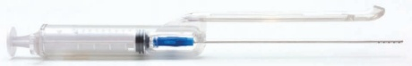
-
用生理盐水充满储液注射器，并让其垂直放置五分钟，使内容物通过重力分层为油、组织和底部的清洗液三层（图 2.3）。
-
轻柔地弃去清洗液。
-
微碎的脂肪组织可用于注射。
-
将收获的脂肪组织转移到储液注射器中（蓝色活塞）。
-
准备 CaHA 稀释液：
i. 稀释（1:1）
a. 使用 Luer-lock 连接将 CaHA 填充剂注射器连接至 3 mL 注射器。
b. 将填充剂转移到 3 mL 注射器中。
c. 将此注射器连接到预装有 1.5 mL 无菌生理盐水的另一个 3 mL 注射器上。
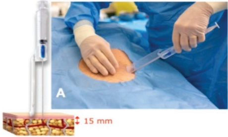
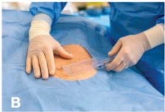
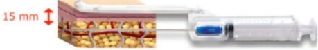
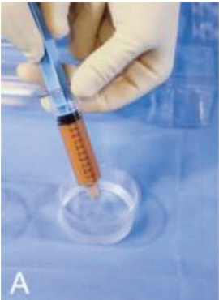
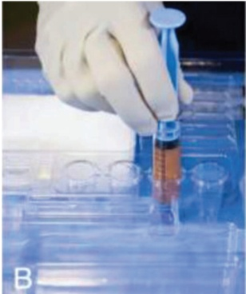
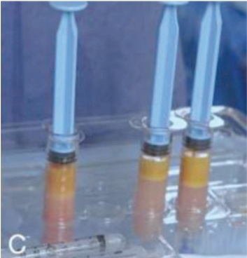
d. 在两支注射器之间进行多次转移，以达到均匀稀释。
ii. 高倍稀释（如需要，比例为 1:2）
a. 将 CaHA 填充剂转移至一个 5 mL 注射器中。
b. 将该注射器连接到另一个预装有 3 mL 无菌生理盐水的 5 mL 注射器上。
c. 在两支注射器之间进行多次转移，以达到一致的高倍稀释效果。
-
如有需要，通过在注射器间转移组织（乳化）对微碎脂肪组织进行最小程度的操作，以达到所需的流动性，特别是对于精细的面部区域（参见图 2.4 的流动性图表）。
-
让患者采取站立位评估。
-
使用记号笔勾画需要治疗的面部区域。
-
将患者置于仰卧位。
-
在套管针的进针点局部注射少量麻醉剂。
-
使用套管针和线性反向扇形技术将配制的 CaHA 填充剂皮下注射：对于皮肤较厚的区域采用 1:1 稀释，对于皮肤较薄的区域采用 1:2 高倍稀释。
-
手术后立即轻柔按摩注射区域。
-
接下来，使用套管针（20–21G）依次注射处理后的脂肪组织。注射应置于浅层皮下层，并利用线性反向扇形技术进行。
-
对于皮肤较厚的面部区域，建议采用三次通注进行乳化，使团块尺寸约为 600 μm。对于皮肤较薄的面部区域，建议采用六次通注，团块尺寸为 500 μm。
-
轻柔按摩治疗区域。
参见图 2.5–2.6 可直观了解 SEFFI-CaHA 技术的前后效果。
2.4 CaHA：CPM-HA
将 CaHA 与粘合性聚倍致密基质透明质酸（CPM-HA）的创新组合代表了面部再生的另一种新方法。虽然 HA 是体积填充的标准选择，但由于其具有战略性的沉积特性，CaHA 主要通过新生胶原形成发挥功效。此外，CaHA 和 HA 的混合可以通过两种不同的方法实现：在同一治疗区域分层产品或注射预混的组合物。分层法涉及顺序应用每种产品，保持其独特的流变学性质；而预混法则是在注射前混合这两种填充剂，可能会改变其组合后的流变特性。将 HA 与 CaHA 预混不仅为 HA 填充剂引入了新生胶原形成特性，还利用了 HA 的高粘度来增强 CaHA 的体积填充效果，同时保持组织柔软性。此外，预混解决了 CaHA 治疗中早期体积丢失的问题，因为 HA 可以补偿 CaHA 凝胶载体的快速吸收。最终，CaHA 和 CPM-HA 的预混可带来更持久的效果和增强的组织提升 [4,5]。
2.4.1 分步技术
-
使用 Luer-lock 连接器，按照混合填充剂应用的标准化方案 [6]，将 CaHA 注射器和所需 CPM-HA 注射范围（CPM-HA R、CPM-HA B、CPM-HA I、CPM-HA V）的内容物混合。
-
将内容物转移到空的混合注射器中。
-
根据以下情况添加：
i. 面部治疗：每 1.5 mL CaHA 加入 0.3–0.5 mL 的 2% 利多卡因。
ii. 手部治疗：每 1.5 mL CaHA 加入 1.5 mL 的 2% 利多卡因。
iii. 颈部治疗：加入 1.5 mL 生理盐水。
| 通注次数 | 团块尺寸 | 套管针或针头口径 | 微脂 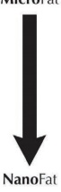 | 体积增强 | 再生 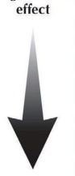 |
| 0 | 800 μm | 18G (内径 0.83 mm) | |||
| 2-3 | 600 μm | 20G (内径 0.60 mm) | |||
| 5-6 | 500 μm | 21G (内径 0.51 mm) | |||
| 10-11 | 400 μm | 22G (内径 0.41 mm) | |||
| 20-30 | 200 μm | 27G (内径 0.21 mm) |
ID，内径。
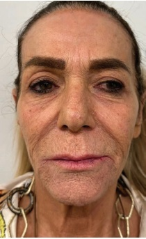
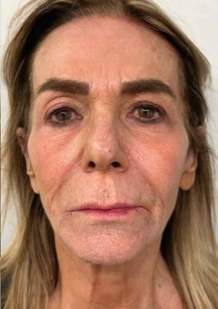
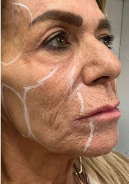
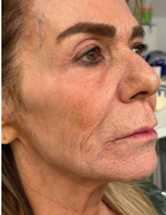
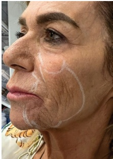
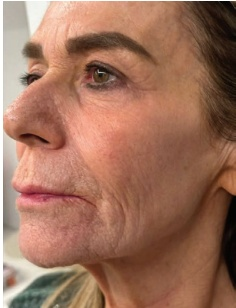
-
将另一个空的混合注射器连接到已装填的注射器上。在两个注射器之间来回转移凝胶至少 20 次，以确保产品均匀化。
-
CaHA 与 HA 的比例取决于治疗指征和严重程度。面部区域的比例根据需要解决的组织松弛程度而异（CaHA:CPM-HA）
i. 明显松弛，轻度体积校正：1:1 至 1:3
ii. 轻度松弛，轻度体积校正：1:4 至 2:4
iii. 轻微松弛，重度体积校正：2:6 至 3:8
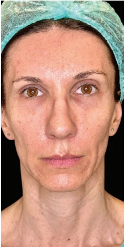
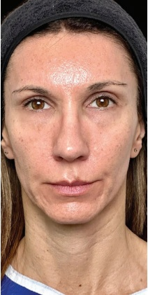
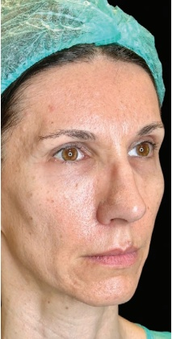
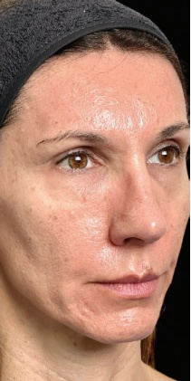
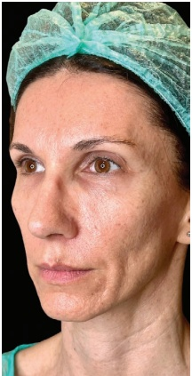
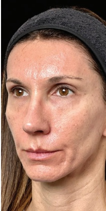
22 羟基磷灰石钙软组织填充剂
比例基于注射器数量，而非体积。
-
仅进行皮下注射（Mendelson层2）。
-
使用22–25G、50 mm钝性套管针采用扇形技术；每条轨迹注射0.1–0.2 mL。
-
注射重点应放在中面部和下部面部。
参考文献
[1] E. Theodorakopoulou et al., “Optimizing skin regenerative response to calcium hydroxylapatite microspheres via poly-micronutrient priming,” J Drugs Dermatol, vol. 22, no. 9, pp. 925–934, 2023.
[2] A. Gennai et al., “Guided Superficial Enhanced Fluid Fat Injection (SEFFI) procedures for facial rejuvenation: An Italian multicenter retrospective case report,” Clin Pract, vol. 13, no. 4, p. 924, 2023.
[3] F. Melfa et al., “Guided SEFFI and CaHA: A retrospective observational study of an innovative protocol for regenerative aesthetics,” J Clin Med, vol. 13, no. 15, p. 4381, 2024.
[4] N. Fakih-Gomez, J. Kadouch, "Combining calcium hydroxylapatite and hyaluronic acid fillers for aesthetic indications: Efficacy of an innovative hybrid filler," Aesthetic Plast Surg, vol. 46, no. 1, p. 373, 2021.
[5] J. Kadouch, N. Fakih-Gomez, “A hybrid filler: Combining calcium hydroxylapatite and hyaluronic acid fillers for aesthetic indications,” Am J Cosm Surg, vol. 39, no. 3, pp. 182–189, 2021.
[6] N. Fakih-Gomez et al., “Standardized protocols for hybrid filler application in aesthetic medicine,” Am J Cosm Surg, 2024, vol.0, no.0. http://doi.org/10.1177/07488068241227278